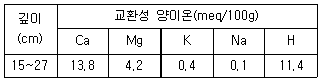
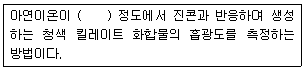
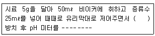
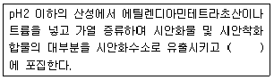
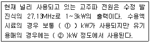
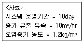

토양환경기사 (2009-05-10 기출문제)
1과목: 토양학개론
1. 토양오염의 특징과 가장 거리가 먼 것은?
- 오염경로의 단순성
- 피해발현의 완만성
- 오염영향의 국지성
- 오염의 비인지성
(정답률: 알수없음)

2. 토양오염물질인 카드뮴 및 그 화합물이 인체에 미치는 영향과 가장 거리가 먼 것은?
- 급성증상 : 구토 등 소화기 증상, 기관지염, 폐기종, 빈혈, 신장 결석
- 신장피질에 축적 : 미나마타병의 경우 신장이 비가역적으로 손상
- 저농도 장기간 노출 : 고혈압
- 고농도 노출 : 돌연변이, 암 유발
(정답률: 알수없음)
3. 비수용성유체(NAPLs)의 이동과 분포에 영향을 미치는 주요 요인과 가장 거리가 먼 것은?
- 누출 후 경과시간
- 지하의 수분 이동(불포화대) 또는 지하수 이동(포화대) 조건
- 지하수면과 누출지점간의 거리 또는 불포화대 두께
- 양이온 치환능에 따른 잔류 포화도의 크기
(정답률: 알수없음)
4. 다음 점토 광물(clay minerals)중 2:2형의 대표적인 것은?
- 카올리나이트(kaolinite)
- 할로이사이트(halloysite)
- 몬모릴로나이트(montmorillonite)
- 클로라이트(chlorite)
(정답률: 알수없음)
5. 다음 중 일반적 유기오염물질의 주요 특성과 가장 거리가 먼 것은?
- 증기압
- 용해도적
- 분해상수
- 옥탄올/물 분배계수
(정답률: 70%)
6. 토양 중 존재하는 이온의 물에 대한 수화도가 큰 순서로 알맞게 배열된 것은? (단, 농도와 온도 등 기타 조건은 같다고 가정함)
- Li＞Na＞K＞NH4＞Rb
- Li＞K＞Na＞NH4＞Rb
- Na＞Li＞K＞NH4＞Rb
- Na＞K＞Li＞NH4＞Rb
(정답률: 알수없음)
7. 유기독성 물질의 미생물 분해반응은?
- 이온교환
- 침전
- 분할
- 용해
(정답률: 알수없음)
8. 다음 표와 같은 깊이에서 교환성 양이온 농도를 측정하였다. 토양의 수소 및 염기 포화도(%)는 각각 얼마인가?

- 수소포화도 : 38.1, 염기포화도 : 61.9
- 수소포화도 : 61.9, 염기포화도 : 38.1
- 수소포화도 : 35.9, 염기포화도 : 64.1
- 수소포화도 : 64.1, 염기포화도 : 35.9
(정답률: 알수없음)
9. 토양층위(토양의 수직단면 성층구조)의 지표면부터 지하로의 구성순서로 옳은 것은?
- A→B→C→R→O
- C→B→A→O→R
- O→A→B→C→R
- R→O→C→B→A
(정답률: 알수없음)
10. 지하수의 유량을 조사할 때 Darcy의 법칙(Q=KIA)이 사용된다. 이 때 K와 I는 무엇을 뜻하는가?
- K는 점성계수, I는 수리적 구배
- K는 투수계수, I는 수심
- K는 점성계수, I는 경심
- K는 수리전도도, I는 수두 구배
(정답률: 알수없음)
11. 비위생 매립장에 위치한 폐기물을 수거한 후 토양조사를 실시하여 보니, 6가 크롬 농도가 6mg/kg이었고 이 농도에 해당하는 토양은 3000 ton 이었다. 처리해야 할 6가 크롬의 양(kg)은?
- 10
- 12
- 16
- 18
(정답률: 알수없음)
12. 다음 토양 내 중금속에 대한 설명 중 틀린 것은?
- 니켈 농도가 높은 토양에서 니켈의 독성은 인산을 첨가하면 감소한다.
- 올리브덴은 정상의 토양에서는 주로 음이온으로서 존재한다.
- 수은독성은 그 화합물의 종류에 따라 크게 다르다.
- 코발트의 황산화물은 사료효과를 증진시켜 돼지, 소의 사료 첨가제로 사용된다.
(정답률: 알수없음)
13. 토양 중 인의 순환에 관한 설명으로 틀린 것은?
- 토양 내 인의 형태 변화시 에너지 교환이 크며, 인 합성 특정미생물이 관여한다.
- 인은 C, N, S에 비해 난용성으로 토양에 흡착성이 강하고 그 존재의 형태에 따라 토양 생물에 의한 이용성이 크게 다르다.
- 미생물 중에 존재하는 인의 양은 토양 중 전체 인량의 1~2%로 소량이다.
- 식물이나 토양 미생물은 용액 중 PO4-3로 흡수, 이용하며 인산염의 용해도는 낮다.
(정답률: 알수없음)
14. 오염물질이 지하대수층을 오염시킬 경우, 지하수면 아래 지배적으로 오염운을 형성하는 오염물질은?
- 트리클로로에틸렌
- 벤젠
- 크실렌
- 톨루엔
(정답률: 알수없음)
15. 오염물 확산 및 처리에 중대한 영향을 미치는 오염지역의 토양 특성으로 가장 거리가 먼 것은?
- 토양 내 유기물질 함량
- 토양의 함수율
- 토양의 pH 및 알칼리도
- 토양의 헨리(공기/물 투수계수)지수
(정답률: 알수없음)
16. 자유면 대수층이 발달한 지역에서 공극률이 0.3, 비산출률이 0.3이고 유역면적이 150km2이며 수위강하를 4m만 하용할 때 지하수 개발 가능량은 몇 m3인가? (단, 자유면 평균 두께 : 100m)
- 1.8×107
- 1.8×108
- 5.4×107
- 5.4×108
(정답률: 알수없음)
17. 흡습수 외부에 표면장력과 중력이 평형을 유지하여 존재하는 물을 모세관수라 한다. 모세관수의 토양수분장력의 범위로 맞는 것은? (단, 토양수분의 물리적인 분류 기준)
- pF 1.5~2.54
- pF 2.54~4.5
- pF 4.5~5.55
- pF 5.55~6.5
(정답률: 알수없음)
18. 토양공기 조성에 관한 설명으로 맞는 것은?
- 대기에 비하여 탄산가스 및 상대습도가 낮고 산소는 높은 편이다.
- 대기에 비하여 탄산가스 및 상대습도가 높고 산소는 낮은 편이다.
- 대기에 비하여 상대습도는 낮고 탄산가스는 높은편이다.
- 대기에 비하여 상대습도는 높고 탄산가스는 낮은편이다.
(정답률: 알수없음)
19. 입자밀도(particle density) 2.5gㆍcm-3, 용적밀도(bulk density) 1.5gㆍcm-3인 토양의 공극률은?
- 25%
- 30%
- 35%
- 40%
(정답률: 알수없음)
20. 1M3의 건조모래를 가득 채운 용기에 물을 부어 공극이 완전히 채워졌을 때 사용한 물의 양은 240l이었다. 배수용 꼭지를 틀어 장기간 물을 중력 배수시켰을 때 190L가 중력 배수되었다. 이 때 모래의 비보유율은?
- 0.01
- 0.⑤
- 0.10
- 0.15
(정답률: 알수없음)
2과목: 토양 및 지하수 오염조사기술
21. 다음은 흡광광도법을 이용한 아연 측정원리에 관한 내용이다. ( )안에 맞는 내용은?

- pH4
- pH5
- pH9
- pH11
(정답률: 알수없음)
22. 0.⑤ N의 KMnO4 용액 500mℓ를 조제하고자 한다. 몇 g의 KMnO4가 필요한가? (단, KMnO4분자얀=158)
- 0.79g
- 1.58g
- 3.16g
- 6.32g
(정답률: 알수없음)
23. 다음은 토양의 pH를 측정하는 방법에 대한 설명이다. ( )안에 알맞은 내용은?

- 15분
- 30분
- 1시간
- 2시간
(정답률: 알수없음)
24. PCB를 가스크로마토그래프법으로 정향화 할 때에 관한 내용으로 틀린 것은?
- PCB를 헥산으로 추출한다.
- 추출액은 실리카겔 또는 플로리실칼럼을 통과시켜 정제한다.
- 검출기는 전자포획형 검출기 또는 전해전도 검출기를 사용한다.
- 운반가스는 네온 또는 수소를 이용한다.
(정답률: 알수없음)
25. TCE를 가스크로마토그래프법으로 측정할 때의 설명으로 틀린 것은?
- 유효측농도는 0.1mg/kg 이상으로 한다.
- 전자포획혐건출기가 사용된다.
- 내부표준액으로 염화 벤젠을 사용한다.
- 시료 중의 TCE를 메틸알코올로 추출한다.
(정답률: 알수없음)
26. 방울수란 20℃에서 정제수 20℃에서 정제수 20방울을 적하할 때이다. 이때의 부피는?
- 약 0.5mℓ
- 약 1.0mℓ
- 약 2.0mℓ
- 약 5.0mℓ
(정답률: 알수없음)
27. 부자 내에서 토양오염을 유발시키는 지상저장시설의 끝단으로부터 수평방향으로 2m 떨어진 지점에서 시료를 채취할 경우 채취 깊이로 가장 적절한 것은? (단, 방유조 없음)
- 3m
- 3.5m
- 4m
- 4.5m
(정답률: 알수없음)
28. 토양오염도검사방법 중 일반지역의 시료채취지점에 대한 설명이 옳은 것은?
- 농경지의 경우 시료채취지점을 대상지역 내에서 중심지점 1개와 주변 4방위의 5~10m 거리에 있는 1개 지점씩 총 5개 지점을 선정한다.
- 공장지역의 경우 시료채취지점을 대상지역 내에서 5~6m간격으로 지그재그형으로 5~10개 지점을 선정한다.
- 매립지역의 경우 시료채취지점을 대상지역 내에서 중심지점 1개와 주변 4반위의 5~10m 거리에 있는 1개 지점씩 총 5개 지점을 선정한다.
- 시가지지역의 경우 시료채취지점을 대상지역 내에서 5~6m 간격으로 지그재그형으로 5~10개 지점을 선정한다.
(정답률: 알수없음)
29. 토양시료의 수분측정결과 다음과 같은 자료를 얻었다. 수분함량은? (단, 증발접시의 무게(W1) : 30.257g, 증발접시와 시료의 무게(W2): 52.495g, 건조후 증발접시와 시료의 무게(W3) : 45.521g)
- 31.4%
- 36.4%
- 42.4%
- 45.6%
(정답률: 알수없음)
30. 다음은 토양 내 시안 측정방법 중 흡광광도법 측정원리에 관한 내용이다. ( )안에 맞는 내용은?

- 클로라인 T 용액
- 수산화나트륨 용액
- 피리딘ㆍ피라졸론 용액
- 황산제이철암모늄 용액
(정답률: 알수없음)
31. 원자흡광광도계애 적용되는 용어에 대한 설명으로 틀린 것은?
- 역화 : 불꽃의 연소속도가 크고 혼합기체의 분출속도가 작을 때 연소현상이 내부로 옮겨지는 것
- 다연료 불꽃 : 2가지 이상의 가연성 가스를 조연성가스와 조합한 불꽃
- 선프로파일 : 파장에 대한 스펙트럼선의 강도를 나타내는 곡선
- 중공음극램프 : 원자 흡광 분석의 광원이 되는 것으로 목적원소를 함유하는 중공음극 한 개 또는 그 이상을 저압의 네온과 함께 채운 방전관
(정답률: 알수없음)
32. 원자흡광광도법에 의한 수은의 정량화에 관한 설명 중 틀린 것은?
- 환원기화 장치가 폐쇄식인 경우에는 염화제일 주석용액을 시효에 넣은 다음 30초 이상 흔들어 수은가스를 충분히 발생하도록 한다.
- 시료 중 염화물 이온이 다량 함유한 경우에는 염산히드록실아민용액을 과잉으로 넣어 유리염소를 환원시키고 용기 중에 잔류하는 염소는 질소가스를 통기시켜 축출한다.
- 시료 중 벤젠, 아세톤 등 휘발성 유기물질은 과망간산칼륨 분해 후 헥산으로 이들 물질을 추출 분리한 다음 시험한다.
- 정량범위는 측정조건에 따라서 다르나 253.7nm에서 0.00⑤~0.01mg/L이다.
(정답률: 알수없음)
33. 다음 가스크로마토그래프 검출기중 전자포획형 검출기(ECD)에 대한 설명으로 맞는 것은?
- 방사선 동위원소(63Ni, 3H 등)로부터 방출되는 β선을 이용한다.
- 직류전기를 공급하는 전원회로, 전류조절부, 신호 검출 전기회로, 신호 감쇠부로 구성된다.
- 수소 불꽃에 의하여 시료성분을 연소시키고 이때 발생하는 불꽃의 전자를 포획하여 분광학적으로 측정한다.
- 주로 인 또는 유황화합물을 선택적으로 검출한다.
(정답률: 알수없음)
34. 누출검사대상시설 중 “부속배관”에 대한 내용으로 가장 알맞은 것은?
- 누출검사대상시설에 용접 또는 나사조임방식으로 직접연결되는 배관을 말한다.
- 지하에 매설되어 누출여부를 육안으로 직접 확인할 수 없는 배관을 말한다.
- 지하매설저장시설에 연결되어 지속적으로 누출검사가 필요한 배관을 말한다.
- 액체의 누출여부를 지하매설저장시설 외부에서 직접 또는 간접적으로 확인하기 위해 설치된 배관을 말한다.
(정답률: 알수없음)
35. 저장물질이 있는 누출검사대상시설의 기상부 누출검사 중 미가압 시험법에 대한 주의 사항으로 틀린 것은?
- 기상변화가 심할 때는 시험을 실시하지 않음
- 시험종료 후 가스방출은 안전한 장소로 방출되도록 함
- 가압장치는 300mmHg 이상의 압력이 가해지지 않도록 안전장치를 설치함
- 안정장치는 수중드롭 방식으로 하고 드롭파이츠의 지름은 밸브측 배관 지름보다 크게 함
(정답률: 알수없음)
36. 지르코늄-발색시약(Zirconium-SPANDS)에 의한 불소의 흡광광도법 분석에 대한 내용 중 틀린 것은?
- 불소는 지르코늄-발색시약과 반응할 경우 진홍색의 ZrG62-를 형성하게 된다.
- 불소이온과 지르코늄이온 사이의 반응 속도는 반응혼합물의 산도에 따라 달라진다.
- 시료에 잔류염소가 함유되어 있는 경우 잔류염소 0.1mg당 NaAsO2용액 한방울을 가하고 혼합하여 제거한다.
- 시료 중 불소함량이 정량범위를 초과할 경우 시료를 정량범위 이내에 들도록 희석한 다음 다시 시험한다.
(정답률: 알수없음)
37. 다음은 ICP의 고주파 전원부에 대한 설명이다. ( )안에 맞는 내용은?

- ①1.5~2.0, ②3.0
- ①1~1.5, ②2.0
- ①1~1.5, ②3.0
- ①1.5~2.0, ②2.0
(정답률: 알수없음)
38. 저장물질이 없는 누출검사대상시설의 누출검사방법 중 가압시험법에 사용되는 기구 및 기기에 대한 설명으로 틀린 것은?
- 온도계는 시험압력에 충분히 견딜 수 있는 것으로서 최소 눈금 1℃ 이하를 읽고 기록이 가능해야 한다.
- 사용가스는 가압매체로 질소 등 불활성가스를 사용한다.
- 안전밸브는 0.7 kgf/cm2 이하에서 작동되어야 한다.
- 압력계는 최소눈금이 시험압력의 10%이내이고, 이를 읽고 측정압력의 기록이 가능한 것을 사용한다.
(정답률: 알수없음)
39. pH 표준액의 pH 값이 맞게 연결된 것은? (단, 온도는 섭씨 15도)
- 프틸산염 표준액 : pH 6.90
- 인산염 표준액 : pH 9.27
- 탄산염 표준액 : pH 10.12
- 수산염 표준액 : pH 12.81
(정답률: 알수없음)
40. 유도결합 플라즈마 발광광도법(ICP)의 조작 순서에 대한 설명으로 맞는 것은?
- 주전원스위치-여기원 전원스위치-플라즈마 안정화-분석파장설정-스펙트럼감도 측정
- 주전원스위치-여기원 전원스위치-분석파장설정-플라즈마 안정화-스펙트럼강도 측정
- 주전원스위치-여기원 전원스위치-분석파장설정-스펙트럼강도 측정-플라즈마 안정화
- 주전원스위치-플라즈마 안정화-여기원 전원스위치-분석파장설정-스펙트럼 측정
(정답률: 알수없음)
3과목: 토양 및 지하수 오염정화 기술
41. 토양 슬러리 반응기를 이용하여 슬러리 유량 100L/min 규모로 초기 TPH 1200mg/kg 농도를 TPH 50mg/kg 농도까지 최종 처리하고자 할 때 필요한 반응조의 크기는? (단, 반응속도 = 1차 반응, 반응조의 종류 = CFSTR, 반응속도상수 = 0.25/min, 정상상태 유출수 기준)
- 6800 L
- 7300 L
- 8400 L
- 9200 L
(정답률: 알수없음)
42. 토양증기추출 시스템 처리효율에 영향을 미치는 오염물질 특성 인자와 가장 거리가 먼 것은?
- 증기압
- 수분함량
- 헨리상수
- 흡착계수
(정답률: 알수없음)
43. Air Sparging법의 영향인자에 대한 설명 중 틀린 것은?
- 처리 대상 오염물질의 Henry 상수는 10-5atmㆍm3/mol 이상일 때 유리하다.
- 오염물질의 증기압(mmHg)이 15 이상이면 효과적이고, 15 미만이면 불리한 조건이다.
- 토양의 foc값(%)은 2 이하 일 때, 오염물질의 용해도는 낮을 때 유리하다.
- 자유면 대수층, 단열이 많은 기반암에서 유리하다.
(정답률: 알수없음)
44. 황화나트륨(Na2S)을 오염토양의 불용화 처리 기술(화학적처리)을 틀리게 설명한 것은?
- 수용성 납화합물이 존재하는 오염토양에 황화나트륨을 첨가하면 황화납이 생성된다.
- 황화나트륨을 토양 중의 카드뮴화합물에 첨가하면 황화카드뮴을 생성한다.
- 황화나트륨을 토양 중의 크롬화합물에 첨가하면 환원제로 작용하여 황화크롬을 생성한다.
- 오염토양에 존재하는 수용성 수은화합물에 대하여 황화 나트륨을 첨가하여 황화수은을 생성시킨다.
(정답률: 알수없음)
45. White Rot Fungus 기술의 제약조건과 가장 거리가 먼 것은?
- 박테리아 수
- 화학적 흡착
- 중간물질 형성
- 독성물질
(정답률: 알수없음)
46. 토양증기추출(SVE)에 관한 설명으로 틀린 것은?
- 오염지역에 추가적으로 시약(산화제, 과산화수소)을 주입하여 처리한다.
- 투수성 지반 내에 렌즈모양의 불투수성 부분이 존재하는 경우, 휘발성 오염물질의 제거효율이 저하된다.
- 투수성이고 균질한 지반에 효과적이다.
- 휘발성이 다양한 오염물질이 함유된 지역에서는 추가로 다른 복원공법의 도입이 필요하다.
(정답률: 알수없음)
47. 타기술에 비하여 유류 오염물질을 빠른 시간 내에 분해하여 처리할 수 있는 화학적 산화법의 장단점으로 틀린 것은?
- 오염물질을 원위치에서 정화할 수 있다.
- 토양 중의 구성물질과 반응하여 산화제의 소요향이 증가할 수 있다.
- 펜톤 산화시에는 부산물이 발생되지 않는다.
- 투수성이 낮은 토양에서는 오염물질과 산화제의 접속이 쉽지 않다.
(정답률: 알수없음)
48. 동전기 복원기술에 적용되는 동전기 현상인 전기영동에 관한 설명으로 틀린 것은?
- 주어진 전기장에 의하여 대전된 입자가 자신이 가지고 있는 전하와 같은 방향으로 이동하는 현상이다.
- 극성을 가지고 전기영동현상을 일으킬 수 있는 입자는 점토슬러리, 콜로이드, 유기복합물, 작은 물방울, 마이셀 등이 있다.
- 전기영동 이동성은 매채의 점성계수에 반비례한다.
- 전기영동 이동성은 전기경사와 평균전하에 정비례한다.
(정답률: 알수없음)
49. 오염토양의 처리방법인 토양세척의 주요 6개 공정에 해당 되지 않는 것은?
- 전처리
- 분리
- 처리수 정화
- 흡착
(정답률: 알수없음)
50. 토양세척기법이 가장 효과적인 토양종류는?
- 점토가 주를 이루는 토양
- 모래와 자갈이 고루 섞인 토양
- 실트와 모래가 고루 섞인 토양
- 점토화 실트가 고루 섞인 토양
(정답률: 알수없음)
51. 저온 열탈착법(Low Temperature Thermal Desorption)의 장ㆍ단점으로 틀린 것은?
- 무기물질 및 방사성 물질을 제외한 대부분의 석유계 화합물의 처리에 유용하다.
- 카드뮴이나 수은 등을 비롯한 거의 모든 중금속 정화에 효과가 탁월하다.
- 다른 정화기술에 비해 높은 에너지 비용이 소요되어 경제성이 낮다.
- 수분함량이 높거나 점토 및 휴익산 등을 높게 함유한 토양의 경우 반응시간이 길어지고 처리비용이 증가한다.
(정답률: 알수없음)
52. 100mm 직경의 지하수 관측정을 설치하기 위해 4군데 지정에 250mm 직경으로 심도 17m까지 보링 하였다. 보링 후 관측정을 삽입하고 지표로부터 1.5m 깊이까지만 벤토나이트를 넣어 마감처리를 하였다면 소요되는 벤토나이트의 양은? (단, 벤토나이트 밀도 = 1.8g/cm3, 안전율 = 1.5)
- 약 530 kg
- 약 580 kg
- 약 610 kg
- 약 670 kg
(정답률: 알수없음)
53. 지하수 내 벤젠의 농도가 10mg/L이다. 일차 감쇠 상수(first-order decay rate)가 0.0⑤/day 일 때 3년 후 지하수 내 벤젠의 농도(mg/L)는?
- 0.018
- 0.027
- 0.035
- 0.042
(정답률: 알수없음)
54. 계면활성제를 이용한 토양세척공정을 사용하여 TCE로 오염된 토양을 처리하고자 한다. 오염된 토양 내 TCE 0.8kg을 모두 용해시키기 위해 필요한 계면활성제를 20L/hr 유량으로 공급할 경우 공급시간은? (단, 계면활성제의 TCE 용해도 2,000 mg/L, 계면활성제의 비중 1.2 기타 조건은 고려하지 않음)
- 4 hr
- 10 hr
- 20 hr
- 40 hr
(정답률: 알수없음)
55. 토양증기추출을 통해 배출되는 배기가스의 제어방법 중 활성탄 흡착에 대한 설명으로 틀린 것은?
- 활성탄 흡착은 일반적으로 오염농도가 1,000ppm 이하 일 때 효과적이다.
- 최적조건에서는 98% 이상의 제거효율을 나타낸다.
- 활성탄 흡착은 배기가스 중의 비휘발성 오염물질을 흡착하는 것이다.
- 활성탄 흡착조에 유입되는 배기가스의 습도가 상대습도로 50% 이상일 때는 사전에 습도를 낮추어야 한다.
(정답률: 알수없음)
56. 다음의 자료를 활용하여 토양증기추출법에 의한 누적오염 물질의 저감량은?

- 28,800kg
- 23,500kg
- 18,200kg
- 15,500kg
(정답률: 알수없음)
57. 4.5m3 용량의 지하저장탱크를 제거하였다. 저장탱크가 제거된 탱크 박스 규모는 4m×4m×5m(L X W X H) 이며 박스 내 오염토양을 시료를 채취하여 TPH 농도를 분석한 결과, 평균농도가 3,200mg/kg로 검출되었다. 이 오염토양내 존재하는 TPH는 몇 리터인가? (단, 오염토양 밀도 = 1.8g/cm3, TPH 비중=0.7)
- 약 602 L
- 약 621 L
- 약 644 L
- 약 668 L
(정답률: 알수없음)
58. 토양오염확산방지기술인 고형화와 안정화에 관한 설명으로 틀린 것은?
- 폐기물 표면적을 증가시켜 안정화속도를 빠르게 하는 장점이 있다.
- 일차적으로 폐기물의 유해성분의 유동성을 감소시키는 것을 목적으로 한다.
- 폐기물의 용해성이 감소하는 장점이 있다.
- 폐기물의 취급이 용이해지는 장점이 있다.
(정답률: 알수없음)
59. 토양 세정법(soil flushing)을 적용하는 경우, 화학적 첨가제로 사용하는 계면활성제에 관한 내용으로 틀린 것은?
- 계면활성제는 공기-물, 기름-물 등 다른 물질 사이에 끼어 들어가 두 물질 사이의 자유에너지를 낮추는 역할을 한다.
- 계면활성제는 친수성체의 성질에 따라 양이온성, 음이온성, 중성 및 양성으로 구분한다.
- 계면활성제는 농도가 어느 이상이면 더 이상 표면 장력을 낮추지 않고 마이셀을 형성하기 시작한다.
- 마이셀이 형성됨에 따라 계면활성제 용액에 대한 오염물질의 용해도는 감소하게 된다.
(정답률: 알수없음)
60. 생물학적 통기법을 효과적으로 적용하기 위해서는 현장에서의 산소소모율을 조사한다. 다음 중 평균산소 소모율(%o2/day)을 구하는 식의 인자와 가장 거리가 먼 것은?
- 주입공기유량
- 배가스 중의 산소농도
- 토양 체적
- 토양 투수계수
(정답률: 알수없음)
4과목: 토양 및 지하수 환경관계법규
61. 지하수의 수질기준에서 일반오염물질에 해당하는 항목이 아닌 것은?
- 수소이온농도
- 일반세균
- 염소이온
- 아연
(정답률: 알수없음)
62. 다음 중 특정토양오염관리대상시설의 종류와 가장 거리가 먼 것은?
- 특정토양오염물질 제조 및 저장시설
- 석유류의 제조 및 저장시설
- 유독물의 제조 및 저장시설
- 송유관시설
(정답률: 알수없음)
63. 지하수오염유발시설관리자가 작성해야 하는 오염지하수정화계획에 포함되지 않은 사항은?
- 지하수의 영향범위
- 정화사업기간 및 정화사업지역
- 시설용량ㆍ설치면적 등 정화작업의 규모
- 재원조당방법
(정답률: 알수없음)
64. 특정토양오염관리대상시설에 대한 토양오염 검사면제 승인을 할 수 있는 경우와 가장 거리가 먼 것은?
- 특정토양오염관리대상시설 중 송유관시설로서 유류의 유출여부를 확인 할 수 있는 장치가 설치된 경우
- 토양시추를 할 수 없는 지반 또는 건물지하 등에 설치되어 토양시료의 채취가 불가능하다고 토양오염조사기관이 인정하는 경우
- 저장시설에 1년이상 토양오염물질을 저장하지 아니한 경우 등 토양관련전문기관이 토양오염검사가 필요하지 아니하다고 인정하는 경우
- 특정토양오염관리대상시설의 설치자가 시설의 사용을 종료하거나 이를 폐쇄하고자 하는 경우
(정답률: 알수없음)
65. 다음 중 토양오염조사기관이 갖추어야 할 장비로 가장 거리가 먼 것은?
- 초음파 추출장치
- 유도결합플라즈마광도계
- 전기전도도 측정장비
- 가스크로마토그래프(FID)
(정답률: 알수없음)
66. 토양보전을 위해 수립하는 토양보전기본계획은 원칙적으로 몇 년마다 수립하는가?
- 3년
- 5년
- 10년
- 15년
(정답률: 알수없음)
67. 측정망설치계획의 고시는 최초로 측정말을 설치하게 되는 날로부터 몇 개월전에 하여야 하는가?
- 1개월전
- 3개월전
- 6개월전
- 9개월전
(정답률: 알수없음)
68. 시ㆍ도지사가 지하수의 보전ㆍ관리를 위하여 필요하다고 인정하는 경우에 지정할 수 있는 지하수보전구역으로 가장 거리가 먼 것은?
- 지하수를 이용하는 하류지역과 수리적으로 연결된 지하수의 공급원이 되는 상류지역
- 지하수의 지나친 개발ㆍ이용으로 인하여 지하수의 고갈현상ㆍ지반침하 또는 하천이 마르는 현상이 발생하거나 발생할 우려가 있는 지역
- 지하수의 개발ㆍ이용으로 주민들의 민원이 제기된 지역
- 지하수의 개발ㆍ이용으로 인하여 주변 생태계에 심각한 악영향을 미치거나 미칠 우려가 있는 지역
(정답률: 알수없음)
69. 지하수오염유발시설관리자는 당해시설의 운영과정에서 오염물질이 인근 지하수로 누출된때에 지체없이 취해야 하는 조치에 해당하지 않는 것은?
- 지하수의 수질측정
- 오염물질의 제거
- 오염물질의 확산을 방지하기 위한 시설의 설치
- 오염지하수의 정화
(정답률: 알수없음)
70. 토양관련전문기관 중 토양오염조사기관이 수행하는 업무가 아닌 것은?
- 토양정밀조사
- 오염토양개선사업의 지도ㆍ감독
- 오염물질 누출검사결과의 검증
- 토양오염도검사
(정답률: 알수없음)
71. 특정토양오염관리대상시설의 설치신고를 하고자 하는 자는 특정토양오염관리대상시설의 설치신고서를 시장ㆍ군수ㆍ구청장에게 제출하여야 하는데 이 신고서 제출에 필요한 서류와 가장 거리가 먼 것은?
- 특정토양오염관리대상시설의 설치내역서 및 도면
- 토양오염물질의 명칭ㆍ저장용량 및 농도 등에 관한 내역서
- 특정토양오염관리대상시설 주변 토양의 배수상태조사서
- 토양오염을 방지하기 위한 시설의 설치계획서
(정답률: 알수없음)
72. 시ㆍ도지사는 토양정밀조사 결과 우려기준을 넘는 경우에 오염원인자에게 조치를 실시하도록 명할 수 있는 데 이러한 조치와 거리가 먼 것은?
- 오염토양의 굴착 및 이송
- 오염토양의 정화
- 토양오염관리대상시설의 개선 또는 이전
- 당해 토양오염물질의 사용제한 또는 사용중지
(정답률: 알수없음)
73. 시장ㆍ군수ㆍ구청장은 토양보전대책지역에 대하여는 대책계획을 수립하여 관할 시ㆍ도지사와의 협의를 거친 후 환경부장관의 승인을 얻어 시행하여야 하는데 이 대책계획에 포함되는 사항과 가장 거리가 먼 것은?
- 오염토양개선사업
- 토양정화의 검증
- 토지 등의 이용방안
- 주민건강피해조사 및 대책
(정답률: 알수없음)
74. 다음 중 특정토양오염관리대상시설의 변경신고를 하여야 하는 경우에 해당되지 않는 것은?
- 사업장의 명칭 또는 대표자가 변경되는 경우
- 특정토양오염관리대상시설의 사용을 종료하거나 폐쇄하는 경우
- 누출방지시설부터 누출이 감지될 경우
- 토양오염방지시설을 변경하는 경우
(정답률: 알수없음)
75. 지하수오염측정 설치에서 지하수오염유발시설의 경계선에서 지하수 주 흐름의 하류지점에 설치하는 관측정의 수는 얼마인가? (단, 특정도양오염관리대상시설에 한함)
- 1개
- 2개
- 3개
- 4개
(정답률: 알수없음)
76. 지하수개발ㆍ이용시공업자의 영업 등록 취소요건이 아닌 것은?
- 부정한 방법으로 등록을 한 때
- 등록기준에 미달하게 된 때
- 계속해서 1년 이상 영업을 하지 아니한 때
- 고의 또는 중대한 과실로 인하여 지하수개발ㆍ이용시설의 공사를 부실하게 한 때
(정답률: 알수없음)
77. 다음 중 토양관련전문기관의 6개월 이내 업무정지 요건에 해당하지 않은 것은?
- 지정기준에 미달하게 된 때
- 속임수 그 밖의 부정한 방법으로 지정을 받을 때
- 다른 사람에게 자기의 명의를 사용하여 토양관련전문기관의 업무를 하게 한 때
- 고의 또는 중대한 과실로 검사결과를 거짓으로 작성한 때
(정답률: 알수없음)
78. 토양오염대책지역에서 행하는 오염토양개선사업을 지도ㆍ감독하는 토양관련전문기관은?
- 시ㆍ도보건환경연구원
- 환경관리공단
- 국립환경과학원
- 농촌진흥청
(정답률: 알수없음)
79. 다음 중 공업용수 용도 지하수의 수질기준으로 틀린 것은?
- 테트라클로로에틸렌 : 0.01mg/L 이하
- 납 : 0.2mg/L 이하
- 비소 : 0.1mg/L 이하
- 페놀 : 0.01mg/L 이하
(정답률: 알수없음)
80. 다음 중 토양오염우려기준 “가”지역에 대한 항목 및 기준치가 잘못 연결된 것은?
- 수은 : 4 mg/kg
- TCE : 4 mg/kg
- 불소 : 400 mg/kg
- 니켈 : 40 mg/kg
(정답률: 알수없음)